Jiu Hu Char
Cooked on 12 March 2026 | By AhMa! In Penang! With Kong Kong's grandmother's wok!
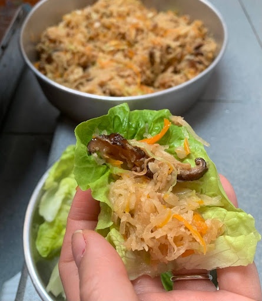
Ingredients
- Oil
- Garlic
- Light soy sauce
- Pork belly
- Jiu hu
- Mushroom
- Onion
- Carrot
- Bangkuang
- Cabbage
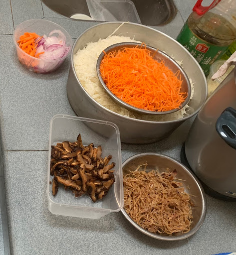
The carrots in the container with the onions were too thick for JHC as they were meant for fried rice. We used them in a stir fry with spinach instead.
Steps
Heat oil
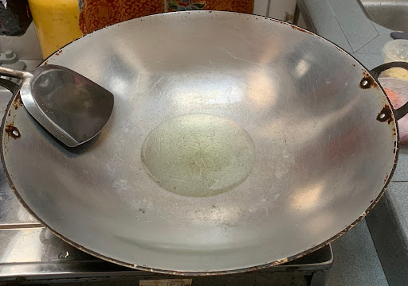
Add garlic
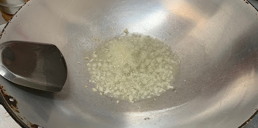
Add light soy sauce
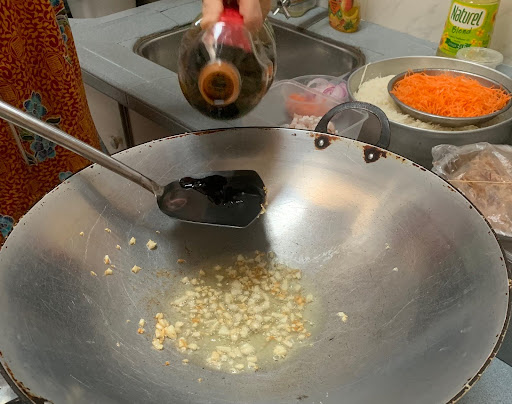
Add pork belly
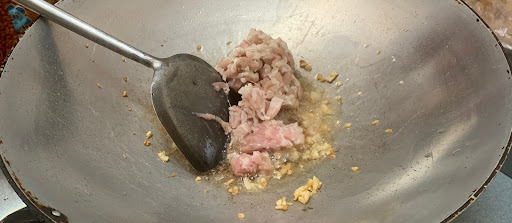
Add jiuhu
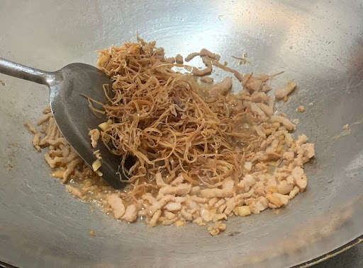
Add shiitake
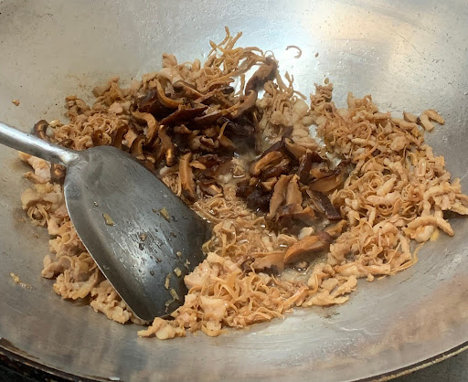
Add onions
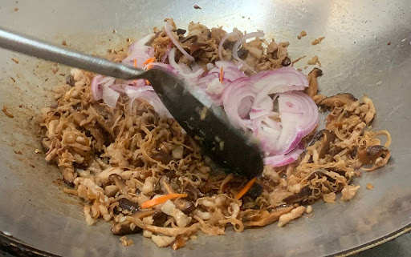
Add carrots
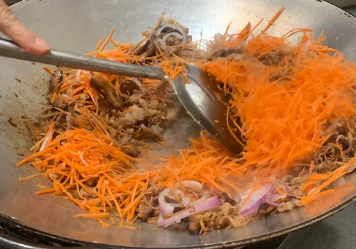
Add bangkuang
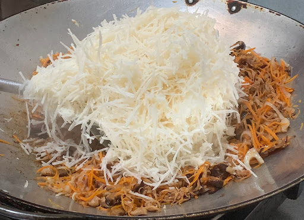
Simmer until softened
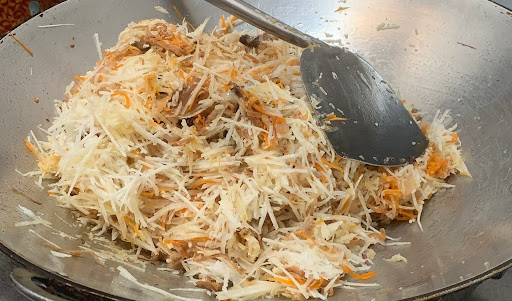
Add cabbage
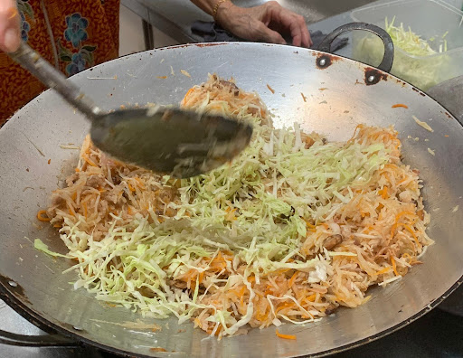
Done!